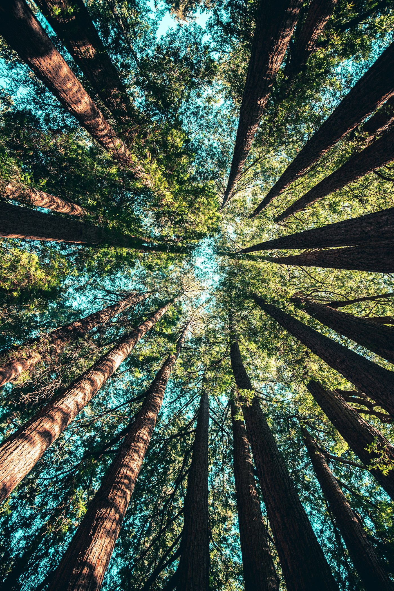

The Waters
Four river systems. Hundreds of miles of Coast Range water. The best fishing on Oregon's Central Coast.
Where the Coast
Range Meets
the Pacific
Oregon's Central Coast is defined by its rivers. They start in the dense, rain-soaked timber of the Coast Range and cut their way through steep canyons, fern-covered banks, and old-growth forest before widening into tidal estuaries and meeting the Pacific Ocean.
These aren't trophy-managed tailwaters or famous fly-fishing destinations. They're wild, rain-fed coastal rivers — productive, unpredictable, and relatively uncrowded. That's what makes them special.
Rimewild operates on four interconnected river systems: the Siletz, the Alsea, the Siuslaw, and the Yaquina. Having access to all four means we follow the fish, not the calendar. When one river blows out after rain, another is clearing up. When steelhead are staging in the Siletz, chinook may be running the Alsea.
That flexibility — and Corey's decades of local knowledge on each system — is the Rimewild advantage.
Siletz River
The Siletz is Rimewild's home river. Sixty-seven miles of Coast Range water running from its headwaters near the Siletz Gorge down to the bay at Lincoln City. Corey has fished this river in every condition, every season, every year since childhood.
The Siletz is best known for its winter steelhead run — one of the most productive on the Oregon coast. Wild fish start showing in December, building through January and peaking in February and March. These are chrome-bright, ocean-fresh steelhead in the 8- to 15-pound range, with occasional fish pushing 20.
Access: Multiple drift sections from the upper river near Siletz Falls down to the tidewater. Most trips launch from established ramps in the middle and lower reaches. Bank access available at several pull-offs along the river road.
Wild Water
Alsea River
The Alsea runs from the Coast Range foothills near Alsea to the ocean at Waldport. It's a versatile river — good for drift boats in the upper sections, excellent bank access throughout, and productive tidewater fishing near the bay.
The Alsea is known for strong fall chinook runs that build through September and peak in October. These are big fish — 20 to 40 pounds — and the river's moderate size means you're fishing close to them. The Alsea also gets a solid winter steelhead run, though it peaks slightly later than the Siletz.
Why beginners love it: The Alsea's bank access makes it the best river for walk-and-wade instruction. Corey uses this river for teaching trips because it allows hands-on instruction in readable water with forgiving terrain.
Siuslaw River
The Siuslaw winds through some of the densest coastal forest on the Oregon coast before reaching the ocean at Florence. It's quieter than the Siletz — fewer boats, fewer anglers, more wildlife. On a foggy morning, you might be the only boat on the water.
The Siuslaw runs warmer than its northern neighbors, which shifts the timing of runs slightly. Chinook arrive later, and the river holds coho through the fall. The upper reaches are excellent for coastal cutthroat — aggressive little trout that hit hard on light tackle in clear, forest-shaded water.
The draw: If you want the feeling of fishing a river that nobody else knows about, the Siuslaw delivers. The forest canopy, the fog, the wildlife — it's the most immersive river experience in our rotation.
Read the Water
Yaquina System
The Yaquina is different from the other three. Centered on Newport and Yaquina Bay, it's a tidal system where river fishing meets ocean influence. The bay itself is a productive fishery — perch, rockfish, lingcod, and crab alongside the salmon and steelhead runs that push through.
The tributaries feeding the bay — Yaquina River, Elk Creek, Big Elk Creek — run smaller and more intimate than the Siletz or Alsea. They offer technical fishing in tight quarters, where reading water and precise presentation matter more than covering distance.
Unique opportunity: Tidal fishing near Newport offers something the other rivers can't — the chance to fish where freshwater meets salt, where salmon stage before pushing upstream, and where the species list expands beyond the usual salmonids.
Reading
the Water
Understanding how weather, rain, and seasons shape these rivers is how Corey puts you on fish.
Rain & River Levels
Oregon's Central Coast gets 60–80 inches of rain annually. That rain is what drives the fishery. Fresh rain brings fresh fish. A rising river pushes steelhead upstream, triggers chinook to move, and pulls cutthroat into feeding lies. The key is timing — fishing the sweet spot between when the river rises and when it clears. Too high and muddy, the fish can't see your presentation. Too low and clear, they get lockjaw. Corey reads rain forecasts the way a stock trader reads charts.
Water Temperature
Cold water drives winter steelhead. When ocean temps drop and the rivers cool into the 40s, chrome-bright steelhead push in from the Pacific. Summer steelhead and cutthroat prefer warmer water in the 50s and 60s. Chinook arrive when water temps start dropping in late summer. Each species has a temperature window, and Corey checks river temps before every trip to pick the right water and the right target.
Tides & Estuary
In the lower reaches and tidewater sections, tidal influence shapes the fishing. An incoming tide pushes baitfish upstream and brings fresh salmon into the river mouth. An outgoing tide concentrates fish in deeper pools and channels. On the Yaquina, tide timing is everything. On the Siletz and Alsea, it matters in the lower 5–10 miles. Corey factors tide charts into every tidewater trip.
Blown-Out Protocol
When a river blows out — too much rain, too muddy to fish — Rimewild doesn't cancel. We move. The Siletz and Alsea clear at different rates. The Siuslaw often stays fishable when the others are chocolate milk. Having four river systems means always having an option. Corey calls the audible the morning of, based on current conditions.
Best Conditions
The ideal day? Overcast skies, light rain, water that's dropping and clearing after a rise — what locals call "steelhead green." Visibility between 2 and 4 feet. This is when steelhead are most active and most willing to bite. Bright, sunny, low-water days are the toughest — but they happen less often than you'd think on the Oregon coast.
What to Expect
It will rain. That's not a warning — it's a feature. Dress for it, embrace it, and understand that the rain is what makes these rivers productive. Average winter highs are in the mid-40s; summer tops out around 65. Wind is usually mild once you're in the river canyon. Fog is common, especially on the Siuslaw. It burns off by mid-morning most days.
Seasonal
Calendar
Every month offers something. Here's what runs when, and on which river.
| Species | River | Jan | Feb | Mar | Apr | May | Jun | Jul | Aug | Sep | Oct | Nov | Dec |
|---|---|---|---|---|---|---|---|---|---|---|---|---|---|
| Winter Steelhead | Siletz, Alsea | Peak | Peak | Good | Late | Early | Good | ||||||
| Summer Steelhead | Siletz | Early | Good | Good | Peak | Peak | Good | Late | |||||
| Fall Chinook | Alsea, Siletz, Siuslaw | Early | Good | Peak | Late | ||||||||
| Coho Salmon | Siuslaw, Alsea | Early | Peak | Good | |||||||||
| Coastal Cutthroat | All Rivers | Good | Peak | Peak | Good | Late | |||||||
| Blacktail Deer | Coast Range | Archery | Rifle | Late | |||||||||
| Roosevelt Elk | Coast Range | Rifle |
Getting to
the Water
Where we meet, where we launch, and what to know before you arrive.
Launch Points
- Upper Siletz: Moonshine Park area
- Middle Siletz: Sam Creek, Ojalla Bridge
- Lower Siletz: Strom Park, Morgan Park
- Tidewater: Siletz Bay area
Meeting point is typically in Lincoln City or Siletz. Exact location depends on which section we're fishing and current conditions. Corey will confirm the morning of.
Launch Points
- Upper Alsea: Mike Bauer Park
- Middle Alsea: Five Rivers area
- Lower Alsea: Tidewater, Waldport
Meeting point is typically in Waldport or along Highway 34. The Alsea has more bank access than the other rivers, which makes it ideal for walk-and-wade trips.
Launch Points
- Upper Siuslaw: Whittaker Creek area
- Middle Siuslaw: Mapleton
- Lower Siuslaw: Cushman, Florence
Meeting point is typically Mapleton or Florence. The upper Siuslaw above Mapleton is the most scenic section — dense forest, minimal road access, and the best cutthroat water.
Launch Points
- Yaquina Bay: Newport waterfront
- Yaquina River: Elk City area
- Big Elk Creek: Various pull-offs
Meeting point is Newport. Bay trips launch from the waterfront. Tributary fishing is walk-and-wade from county road access. Tide timing is critical for bay trips.
Before You Arrive
Timing
Most trips meet at dawn — typically 6:00–6:30 AM in winter, 5:30–6:00 AM in summer. Full-day trips run 7–8 hours on the water. Half days are 4–5 hours.
Parking
All launch points have gravel or paved parking. No fees on most. Some ODFW sites require a parking pass (available at sporting goods stores in Lincoln City and Newport).
Lodging
Lincoln City, Newport, Waldport, and Florence all have lodging. We can recommend spots that work for early-morning departures. Most are 15–30 minutes from the river.
Fish These
Rivers
Book your Rimewild experience and get on the water.